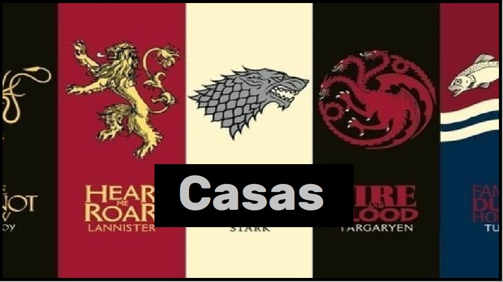
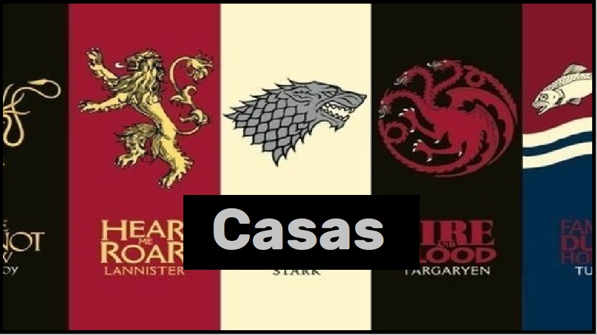

Daenerys fue la única hija del rey Aerys II Targaryen y de su hermana-esposa, la reina Rhaella. Tras la muerte de su padre y de su hermano mayor en la Guerra del Usurpador, viajó con su otro hermano, Viserys y su madre quien murió dando a luz a la pequeña Daenerys.
Cersei es representada como una mujer de carácter narcisista y ambicioso, no se detiene ante nada para cumplir sus objetivos y ella misma admite no amar a ninguna otra persona que no sea ella o sus hijos, pues cree que el amor hace a las personas débiles.
Capaz de ser caballeroso y encantador, pero también cruel y despiadado en ocasiones, Jaime es un hombre despreciado por el pueblo por asesinar al rey que juró defender. Jaime lo consideró el hecho más bondadoso de su vida, pero debido a que los motivos por los que lo hizo permanecieron ocultos para todo el mundo.
Ned Stark es el Señor de Invernalia y patriarca de la Casa Stark. A la muerte de su tutor, Jon Arryn, el rey Robert Baratheon lo nombra Mano del Rey. Ned tendrá que introducirse en un mundo lleno de intrigas y conspiraciones, en donde su honor y lealtad no tendrán cabida.
Jon Nieve fue concebido como un personaje marcado por sus orígenes; de carácter melancólico y taciturno, Jon es consciente de su condición de bastardo y sabe que nunca podrá ser igual que sus medio-hermanos, por ello busca un lugar donde poder destacarse y ser él mismo.
Arya Stark una muchacha independiente, ingeniosa y de fuerte carácter pese a su corta edad. Su posesión más valiosa es su espada Aguja, una fina espada regalo de Jon Nieve. Mantiene una relación de animadversión con su hermana Sansa Stark que posee unos gustos y unas aficiones muy distintas a las de Arya.